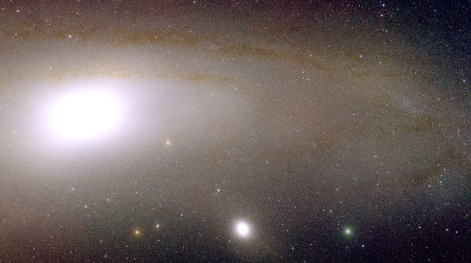
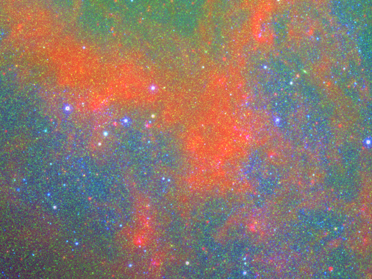

| PhD Candidate | |
| Queen’s University | |
| Kingston, Ontario | |
| @jonathansick | |
| blog.jonathansick.ca | |
| Stellar Populations; Galaxy Formation; Solving Problems with Data & Code. |
I work on the Andromeda Galaxy at Queen’s University with Stéphane Courteau. I did my undergraduate work at Rice University in Houston, Texas (with Prof Dufour). I also did summer research on the GHOSTS nearby galaxy survey with Roelof de Jong at the Space Telescope Science Institute in Baltimore, MD. Going further back, I built a robotic telescope with computer vision and competed in Intel International Science & Engineering Fairs, Canada-Wide-Science Fairs and Calgary Youth Science Fairs.
I lead the Andromeda Optical and Infrared Disk Survey (ANDROIDS). We’re using the WIRCam and MegaCam instruments on the Canada-France-Hawaii Telescope to assemble next generation maps of Andromeda’s stellar populations and structure. Our data set allows us to investigate Andromeda from simultaneously local and global perspectives.
Our first paper, which develops the technical procedures for wide-field near-infrared imaging, is now available as a pre-print. Below: the disk of M31 in near-IR (iJK) bands.
Peering deeper, and with a broader wavelength range, we can better understand the interplay of stellar populations and interstellar medium. Here we see a section of the M31 disk in MegaCam u, WIRCam J and Spitzer 8 µm light:
ANDROIDS are: myself (Queen’s; PI), Stéphane Courteau (Queen’s; PhD Advisor), Jean-Charles Cuillandre (CFHT; MegaCam Guru), Julianne Dalcanton (UW; PHAT), Roelof de Jong (IAP), Raja Guhathakurta (UCSC; SPLASH), Michael McDonald (MIT), and R. Brent Tully (UH IfA).
Derived from MongoDB astronomy, Mo’Astro is a framework for building observational astronomy pipelines around the schema-less MongoDB data store. With Mo’Astro, managing the metadata and pipeline state for thousands of observations becomes a bit easier. Mo’Astro includes hooks into the Astromatic pipeline software.
Delaunay/Voronoi tessellations and adaptive spatial binning for astronomy. Currently in privata beta.
Python helpers for the DOLPHOT photometry software by Andrew Dolphin. Currently in private beta.
ADS to BibDesk makes it easy to grab papers and add them to your BibDesk reference manager.
My Vim setup, tuned for developing Python. Plugins are installed as Pathogen submodules.
My ZSH dotfiles, featuring the Sick prompt. I also maintain a Python and Astromatic-centric Mac OS X build guide on the wiki.
Work with Amazon S3 log files in MongoDB.
Python interface to the Flexible Stellar Population Synthesis Package by Conroy, Gunn and White. Future development will be directed towards Dan F-M's version, Python-FSPS, instead!
Embarassingly parallel processing with the ZeroMQ message-passing framework. Replacement for multiprocessing’s Pool.map().